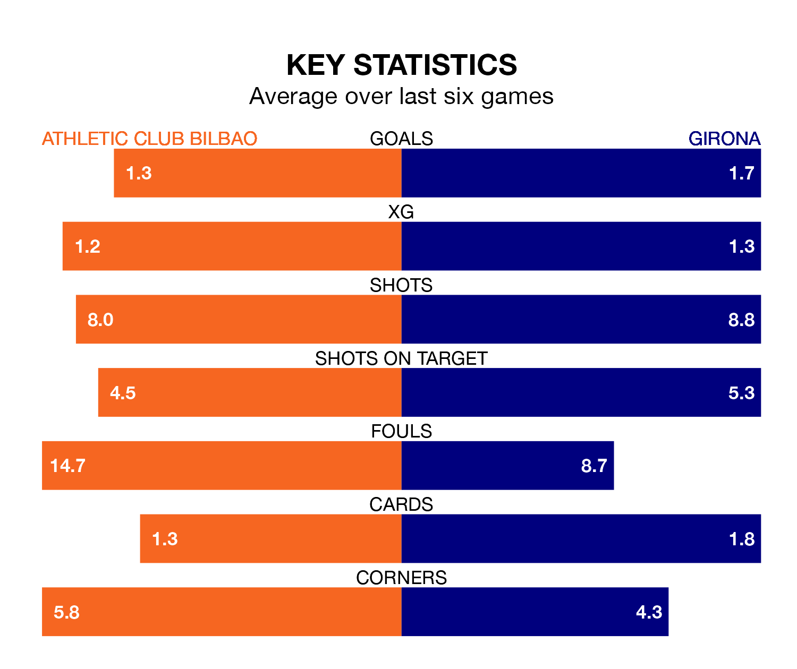

Girona travel to San Mamés Barria for Monday's late match against Athletic Club Bilbao looking to bounce back from defeat last time out in La Liga.
Girona, who sit second in the league after 24 games, fell to a 4-0 away defeat to Real Madrid on February 10.
They face an Athletic side who secured a draw in their last match, a 0-0 tie with Almería, and who sit fifth in the table.
With 52 goals in 24 games so far this season, Girona are the league's joint-highest scorers with 2.2 goals per game. And they are conceding fewer than average, letting in 29 goals at a rate of 1.2 per game.
Athletic are also above average scorers, with 1.8 goals per game, compared to a league average of 1.3. They have conceded 0.9 goals per game.
In Unai Simón, the hosts can rely on one of the league's safest pair of hands. He has kept 12 clean sheets in his 24 appearances this season, and no 'keeper has prevented the opposition scoring more often in La Liga.
In the away side's net, Paulo Gazzaniga has eight clean sheets in 24 games. He has conceded a goal every 80 minutes, 30% more often than the 103 minutes between goals for Simón Mendibil.
In the last 10 years, Athletic and Girona have played each other on seven occasions. They won three each, and they drew once.
On average, Athletic scored 1.3 goals and Girona 1.3 in those matches.
Their last meeting was on November 27, when they played out a 1-1 draw.
Athletic are in reasonable form in La Liga, with three wins and two draws from their last six games.
And also with three wins and two draws over that period, Girona's form is identical – they have both taken 11 points from 18.
Updated: 12:06 (UTC), 15/02/24